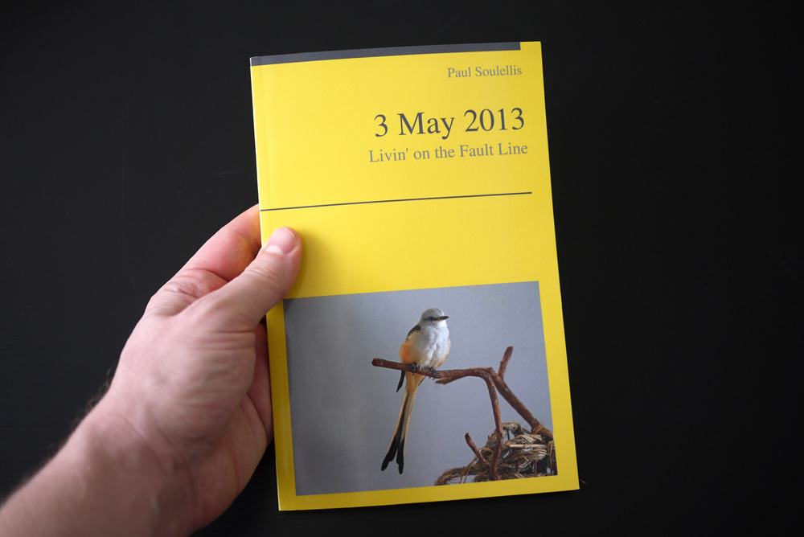
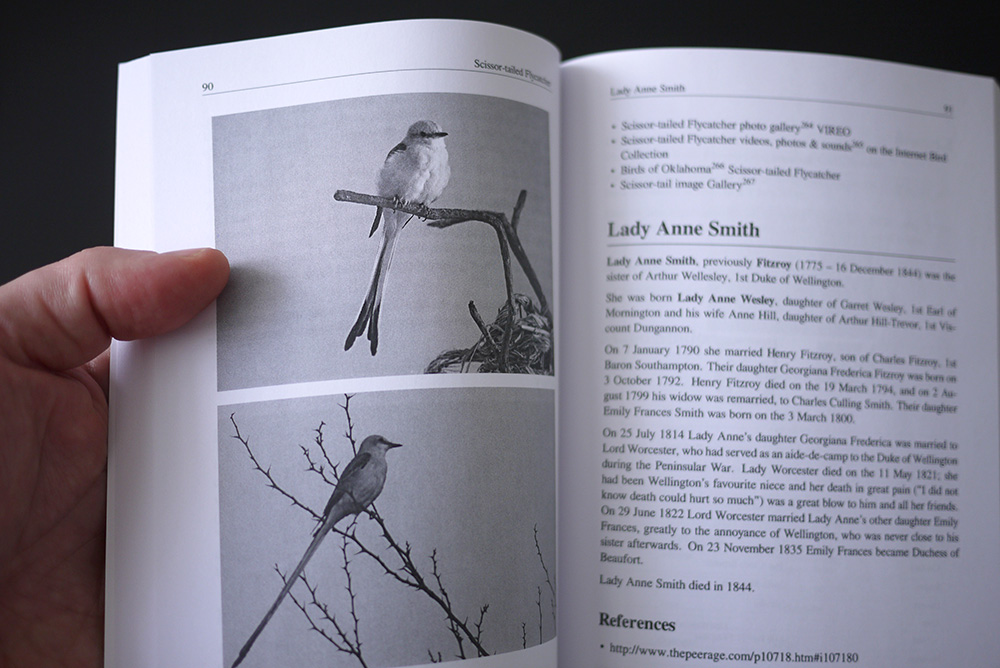
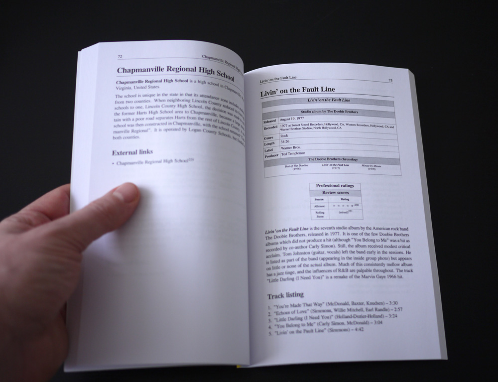

Chancebooks (2013)

Chancebooks is a publishing-on-demand experiment using Wikipedia and chance operations. Each Chancebook is a one-of-a-kind assemblage of up to 100 randomly pulled articles from Wikipedia. The selection and sequence of content is generated in real-time as I repeatedly click the “random article” button that appears on all Wikipedia pages, and add each individual page to the book. The total number of articles is determined by pulling a random number (1–100) at random.org.
The title is selected from the list of article titles.

Only one copy of each Chancebook exists, printed on-demand and delivered to me. The book’s design is automated and determined by the print-on-demand service. Included within each book are my location and exact date and time of the book’s creation.
Chancebook #1 (Why Does It Hurt So Bad) [39 articles] was created in Long Island City, New York, USA at 2:29pm on March 26, 2013 and delivered on March 29, 2013.
Chancebook #2 (Livin’ on the Fault Line) [86 articles] was created in Long Island City, New York, USA at 12:49pm on May 3, 2013 and delivered on May 8, 2013.

Each book in series—
Digital print-on-demand
Edition of 1 (unique copy)
Perfect binding
5.5 in. x 8.5 in.
Variable pages
